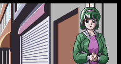

Secrets
Enter these on the main menu, one button at a time, finishing with L and R together. A sound plays when a code is accepted.
| Code | Effect |
|---|---|
↑ ↑ ↓ ↓ → ← → ← L+R | Every Champion Road rating gate opens, so each chapter moves on after one series. Four hidden wrestlers join the Exhibition roster: Megumi Muto, Chigusa Yuki, Reiko Kanamori and Narumi Otaka. The first two are the girls in Champion Road's closing epilogue. |
↑ ← ↓ → ↑ ← ↓ → L+R | All of the above, plus a chapter number in the top-left corner (change it with ← →). Champion Road then starts at that chapter, 1 to 12, with every stat at 16. |
→ ← → ← A+B+X+Y | Erases the save data. |
Match move test. Hold L+R on controller 2 while the title logo slides in, then press A+B+X+Y together on controller 1. In every match after that, a move number and the developers' own short move label ("ARM WHIP", "W ARM SP" and so on) appear over the left name panel. The d-pad steps through the moves, and holding R makes your wrestler use the one shown. It switches off when the title sequence restarts.
The hidden four, without a code. Muto, Yuki, Kanamori and Otaka are also the opponents at the 13th and last stop of every World Circuit, so finishing the circuit always means facing them. They can't join your team.
Nothing unlocks. Clearing an ending, the World Circuit, the League or the Tournament changes only that run's save. One spare byte in the save data adds two extra rows to the System screen, below Message, but nothing in the game ever sets it, and the rows have no label and do nothing. They look like unlockable options that were planned and never finished; editing the save is the only way to see them.
Attract demo. While the demo plays, holding L+R keeps it looping and holding Select ends it.
Left-over tools. The cartridge also holds a complete sprite layout screen that nothing starts, and a recorder that captured controller 1 to make the demo. The recorder writes into the cartridge's own memory, so it does nothing on real hardware.
Never used
Finished pieces of the game that nothing in it ever uses: four moves, seven personalities' worth of victory lines, and one background picture.
Four moves
These moves have complete data (damage, timing, everything a match needs) but no name, and no wrestler has them or can learn them. Only the move test above can make a wrestler use them. The labels are the developers' own, in the move test's letters.
| Move | Label | What it is |
|---|---|---|
| 3D | HARITE | An open-hand slap |
| 3E | PUNCH | A closed-fist punch |
| 3F | KICK | A kick that also hurts the legs |
| 47 | TECCHU | Ramming the opponent into the ring post, with the highest chance of drawing blood of any move |
Every move that has a name is used by someone. Blizzard Yuki's RAIDEN and SHINDEN are hers alone, and only the heels have WEAPON ATTACK; none of the three can be learned.
Seven unused personalities
After a match, the game shows a line from one of the wrestlers, picked by her personality and by how the match went. The game has twelve personalities, but every wrestler is one of the first five, so the other seven never speak. Each has five lines. The names below are ours; the game only numbers them.
One picture
Story scenes are set against twenty background pictures. Number 9, a street of shop fronts with their shutters down, is the only one the script never shows. Here it is in a test build, with Yoshimi Takagi from the scene we borrowed standing in front of it.

Cut scenes
These scenes are still in the game's script, complete with music, backgrounds and speakers, but no script instruction ever calls them.
Contains story spoilers. Speaker names are worked out from the dialogue, since the game fills them in at run time; "Heroine" is the wrestler you chose. Lines with no name are narration or an unnamed voice, such as a promoter, just as the game shows them without a name box. Lines marked "also used" appear in a scene that does play.
Lines without a scene
273 more lines have no code at all: their scenes were deleted, but the text was left behind in the cartridge, next to lines that are still used.
Most are scraps of a page or two. These are the ones that still tell a story:
Every other fragment ()
How we know
The story runs as an event script. The game starts that script in exactly two places, Champion Road and the World Circuit, and the script has no computed jumps: every jump and call names its target. Following every one of them from those two starting points reaches 2,894 of the 3,413 dialogue strings. The rest are on this page.
- The cut scenes set story values that no reachable code sets, and test for values that never come true. That is how they were cut: the jumps to them were removed or rewired.
- The Greta homecoming is the one cut scene that is still called, from a block that sits after a jump the script always takes.
- The unused moves, personalities and picture were found by checking every wrestler's data, every move list and every picture the script asks for. The quotes and moves are from reading the code; the picture was put on screen in a test build.
- The first two button codes were checked in an emulator on the English build (the save-erasing one was read from the code and not tried); the move test was checked by switching it on directly, because the emulator's test driver only uses controller 1. The other findings are from reading the code.
All of this text is translated with the rest of the script, so it would read in English if a patch ever restored it.